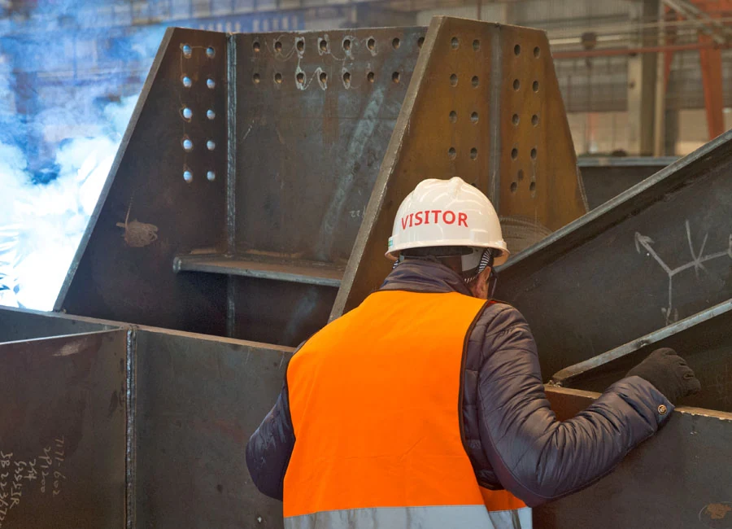
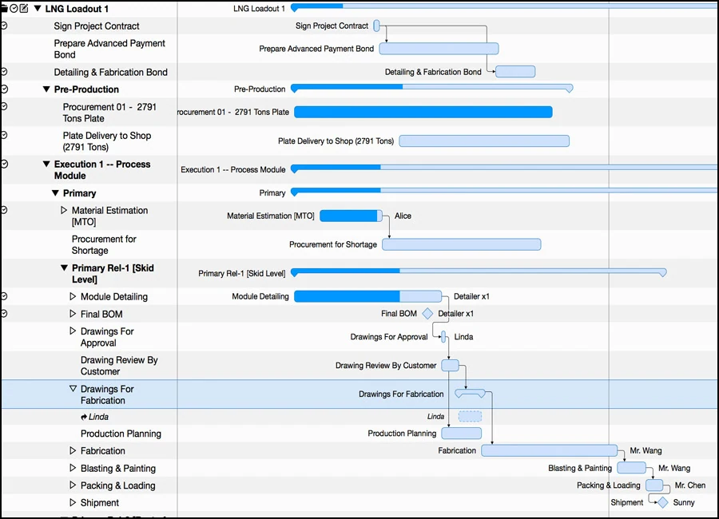
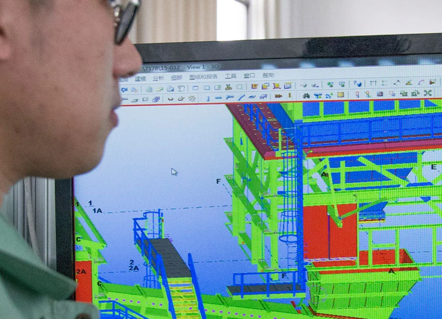
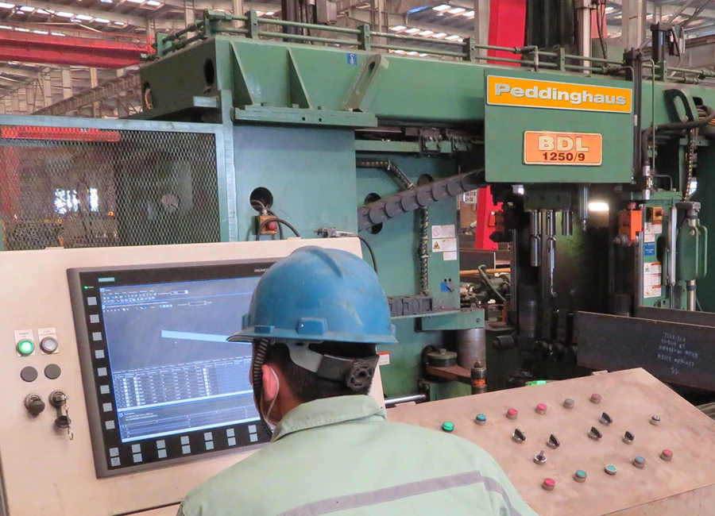
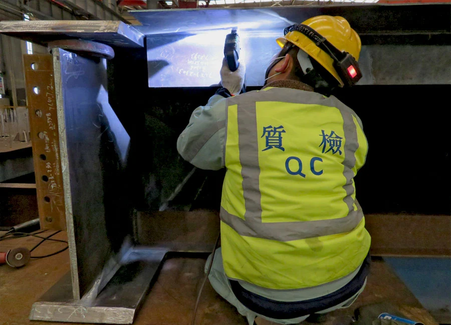

Pre-Sales and After-Sales activities are a big part of showing our customers that were are a responsible supplier.
The first step of working with a new supplier is the prequalification process. This is an early indicator that demonstrates the readiness
and core capability of your fabricator. It takes a lot of effort for a customer to develop a new supplier, and for a supplier to prove themselves
to a new customer.
MDHI’s Sale services include:

- COMMUNICATION in English, Chinese, Vietnamese and Japanese. We can also use other languages if required.
- PRESENTATIONS about MDHI products and services are given both at our offices, and at yours. Traveling to meet our customers is an important outreach step for business development.
- TECHNICAL assessment of MHDI capabilities, detailed company information, financial statements, equipment lists, and company certifications.
- PHYSICAL shop prequalification audit including process walk-thru, hold point inspection, material controls, consumables storage, fabrication & coatings inspection, review of quality procedures, Quality Manual, and historical manufacturing records.
- ESTIMATING Begins with receiving the customer RFQ and assessing the project scope, raw material requirements, specifications. If accepted, the project cost will be calculated, bid packages will be compiled, and formal proposals will be sent to the customer.
- SUBMITTAL of quality documents as per customer request, such as uploading to cloud servers, CD, other forms of transmittals.
- EXECUTION of Warranty / Guarantee as per the agreed conditions and terms, including any repair/replacement request from the jobsite.
- TECHNICAL support for erection or assembly, including drawing support, engineering support.
- SITE supervision for logistics, receiving, laydown, site erection, liaison, site claims, etc.
- ATTEND any necessary project meetings, conferences, project commissioning other other special functions.
MDHI’s After Sale services include:
Advancing business engagement while minimizing uncontrolled risk.
You can ask anyone out there today and they all will tell you the same thing. The environment is more competitive. The big players are getting bigger, and
doing business with them exposes you to more risk. It takes real commitment to ensure you deliver what you signed up for. Aligning yourself with the
right suppliers is key, because milestones and delivery dates don’t just go away.
MDHI’s commercial services include:

- CONTRACT review is performed to understand all aspects of project scope, material standards, fabrication standards, welding standards, special fabrication, special instructions, inspection & testing requirements, delivery terms, payment terms, liquidated damages, and warranty clauses.
- TECHNICAL & Commercial Clarifications are opened pre-contract to clarify any questions that do not have obvious answers. These clarifications can cover any subject, but tend to relate to scope of supply or engineering.
- ADVANCE Bonds & Performance Bonds are settled and issued to cover down payments and to assure performance during the manufacturing phase of the project.
- PURCHASE Orders or contracts are validated and signed, marking the official project start, allowing the the finance department and project team to log in the new project and turnover to the project team.
A single point of contact ensures nothing will be lost in communication, and that the job will be done competently.
Project Managers at Modern Heavy Industries take over the project after the contract is signed. They are solely responsible to control all processes and participating departments
through the manufacturing cycle of the project. Communicating directly with their counterparts on the customer-side, our project managers assure a seamless effort will be focused on the execution, quality, and timely
delivery of your goods.
MDHI’s project management services include:

- PROJECT Manager will be assigned immediately after contract signing to begin communication and coordination of the project.
- SCHEDULING is prepared by the project manager to be as close as possible to the customer’s requirement for delivery. Usually our scheduling is more detailed because we look at drawing release and detailed breakdown of fabrication sequence, planning time, large assemblies, components, small parts, and delivery dates.
- DOCUMENT Transmittal staff receive drawings and specifications, maintain transmittal logs, update document revisions, issue Requests for Information (RFIs) to the customer, issue internal notifications and special instructions to the workshop.
- KICK-OFF Meetings are held both the the customer, and internally with our production team. All aspects of the fabrication scope and specifications, as well as special fabrication requirements are shared with the team. All milestones, delivery dates and quality requirements are clearly explained.
- PLANNING will commence between the project manager, engineering manager and production managers to prioritize drawing release, procurement, fabrication activity, special manufacturing requirements, or outsourced services.
- PRODUCTION Management is overseen by the Project Manager even though they are different departments. The PM is always commanded to maintain the project schedule, regardless of other issues that may arise, as long as quality is not compromised.
- FREE-ISSUED materials are sometimes sent by the customer. Our PMs will prepare the Customs Clearance Handbook and arrange for the materials to be imported into China, so as to avoid paying and duties or tax on items that will be later exported again as part of the project.
- PSR (Project Status Reports) will be sent out on a periodic basis to give you a snapshot of your project production. All estimated and actual dates for all fabrication processes are tracked and updated for each release of fabrication.
- CONFERENCE calls or video-conferencing helps keep the communication channel open and fluid during the project execution. This allows everyone to relax and casually discuss weekly issues.
- OUTSOURCING is arranged by the project manger for special machining, special parts, galvanizing, or other required services. The PM ensures that any outsourced supply is qualified, vetted, listed as an approved supplier and monitored for compliance.
- CHANGE Orders (VARIATIONS) are received and managed by the project manager. It is always desirable to minimize any impact such as increased cost or delays, so each change is assessed as quickly as possible with suggestions for the most efficient remedy.
- CONTRACT Administration is controlled by the project manager. After the project is turned over from the commercial department, the PM will ensure that all contract items, negotiated items or changes are executed in accordance with the agreement, specifications, or situational conditions.
- LOGISTICS Logistics and Packing are arranged by the project manager according to the contracted terms. Sometimes special packing is required for either containers or break bulk vessels. Delivery destinations can range from our factory to the client’s jobsite, utilizing various modes of transport, such as truck, rail, barge and ships.
- WARRANTY Bonds are arranged by the project manager and finance department. They are the last extension of the commercial agreement of the contract and will be in place for the agreed warranty period for the delivered goods.
With the cost of today's outsourced engineering, finding a supplier that perform's 3D modeling and drawing production is a great asset to the project workflow.
Modern Heavy Industries is typically absent from design & engineering calculations. This is because our engineering packages are usually received as ‘issued for construction’ (IFC) by the customer, with general
arrangement drawings, main assemblies, and connection design already completed.
MDHI’s engineering services include:

- DOCUMENT Control managers will receive drawings and verify them against drawing lists, update transmittal logs, document revisions, manage the factory-side request for information (RFI) process, and ensure correct distribution of project information and instructions.
- ADVANCE Bills of Material (ABMs) will be created from customer-supplied data, model extraction, or material take-off (MTO) from supplied IFC (Issued for Construction) drawings. ABMs facilitate early procurement and can save from two weeks to two months, depending on the origin of the raw materials.
- MATERIAL Substitution or Conversion is a valuable process that allows any native standard of steel (profiles and grades) to be converted to use Chinese (profiles and grades) to achieve the intended design output and performance. The purpose of this process is to make procurement easy from China and and leverage your cost savings. MDHI engineers will model the structures, replacing each original profile with a customer-approved Chinese replacement profile that meets or exceeds the physical and mechanical attributes of the original; all done so while minimizing weight increases and loss of performance or structural integrity. Another output of this process is an early profile (shape) list which facilitates early procurement.
- THREE dimensional models are created to allow our team to clearly envision the structure. There are many advantages to modeling, such as clash checking, priority drawing release, adopting changes, assisting with requests for information critical to maintaining production workflow, and the extraction of shop fabrication and site erection drawings.
- DETAILING of connections is performed according to the finalized connection design. The purpose of the detailing is to visualize and finalize the structural steel connection points, calculate materials, and prove that the different parts of a structure can fit together.
- ERECTION drawings are prepared by detailing team to show the sequence of erection, of the steel members and any temporary supports, and the requirements lifting, bolting or welding. In some cases, a methodology statement may be drafted to support the erection documentation.
- REQUESTs for Information (RFIs) are generated in the detailing process when the MDHI engineers determine that some information is not clear, missing, or suggests that some difficulty or problem exists that requires some input, solutions, instructions, or approval by the customer.
- SUPPLIER Deviation (Disposition) Requests (SDRs / SDDRs) are generated by the engineering and project team when there is a need or strong desire to use a different material or product than what was specified. Usually the request is made to simplify procurement, reduce cost, or reduce the time required to procure. Other reasons may be the unavailability to buy certain items, and finally a deviation may be because we simply know a better way to do do something, or a generic specification is given to us, that will not apply in our scope.
- BILLs of Material (BOM) that have been completed after detailing will be released for use both in production and for the notice of the customer if required. These are considered 100% BOMs, and Bolt Lists will be released at the same time for the purpose of procuring all of the site fasteners and high strength bolts.
- PACKING frames can be designed to fit the size and shape of your goods. This is more common in break-bulk shipping when standard intermodal freight containers cannot will not be used.
- CHANGE Changes Orders that arise during the execution of the project will be reviewed by the engineering department to determine impact on the engineering department work, such as detailing, drawing release, and fabrication release. After the solution to the change has been given, the detailers will produce new shop drawings with instructions to make the required changes. Change administration will be done by the project team.
"Once we execute then project, then it’s our time to shine. It all happens here on the shop floor."
Many people will tell you that finish quality is all about quality inspection. Well, not really. The principal job of QC inspectors is to inspect, document and report
the condition of the fabrication and welding -- done by the production team. The shop foremen, team leaders, prefabricators, fitters, welders, painters and packers are the
ones who make sure you will be smiling while erecting our steel.
Here are a few more steps our production team takes:

- PRODUCTION begins with procurement and receipt of raw materials according to the material grades and specifications. Material testing will be conducted according to the ITP or other contractual requirements.
- PLANNING includes prioritizing the sequence of production according to the site erection schedule, and releasing the appropriate drawings for the start of fabrication.
- TECHNICAL management consists of drawing review and study of the complexity of the fabrication, solving methodology when required, and the assignment of special resources.
- NESTING of parts will be done following the sequence release to ensure the correct flow of cutting.
- SHOP production will commence will all processes of prefabrication, fit & weld, trial assembly, cleaning & coating, packing and transportation logistics.
- PROGRESS reporting from the production teams will be coordinated with the project department and quality control department.
Double standards do not work around here. We will not compromise on quality as a device to make a cheaper product.
MDHI Quality Control is all about people and communication. We do away with assumptions and replace them with documented inspections according to an approved plan. Our QA/QC
team is easy to work with because they know how to inspect, and they enforce the provisions of the contractual fabrication standard. In this way, our visiting inspectors enjoy smoother
monitoring with minimal non-conformity.
Our busy QC takes care of these services and processes:

- QUALITY documents list will be prepared alongside the Inspection & Testing Plan (ITP). The document list will be sent to customer for approval and will be part of the final manufacturing records. The Manufacturing Data Record (MDR) also known as the Manufacturing Record Book (MRB) will detail all phases and processes of manufacturing & quality inspection, including the the quality plan. Final QC records are supplied to the customer electronically, FTP, Cloud, Servers, CD, or Hard Copy. MDHI will maintain a backup copy of the records for up to 5 years, or longer if required.
- WELDING Procedure Specification (WPS) and Welding Procedure Qualification Record (WPQR) will be created by MDHI’s welding engineers. These documents describe the welding procedures a record of a test weld to ensure that the procedure will produce a good weld.
- WELDER Qualification Test Records (WQTR) show the certification and qualification of welders and their understanding and ability to work within the specified welding environment.
- AFTER reviewing specifications and drawings, the QC department will have an additional round of fabrication technical clarifications / RFI’s to the customer for any technical questions.
- MATERIAL is received with mill test certificates (MTC) and checked for conformity to the material specification, damage or deformation. The material is segregated according to type and grade; and marked with project number, dimension, grade, color-code, and heat number.
- METALLURGICAL testing is performed on raw materials in certified laboratories according to the project quality plan or ITP, or both. Positive Material Identification (PMI) may be requested for certain alloy steels to establish the percentage of elements present in the samples.
- PRE-FABRICATION inspections are carried out to monitor cutting accuracy and quality. This includes cutting by gas/plasma/lasers, sawing, drilling, milling, boring, punching, shearing, coping, beveling, or bending.
- TRACEABILITY of raw materials begins when cutting does. Tracing will ensure that all parts and components, weather in assemblies or not, can be located in the finished project. This is critical if a suspected non-compliance in chemical or mechanical properties of a specific material exists. Any related (batch) materials can be identified and located before, during, or after installation.
- FIT-UP inspection is a hold-point check by MDHI QC to ensure compliance to design quality, strength and appearance of the finished weld. The fit-up is the final chance to check construction dimensions before welding. MDHI fitters can predict post-welding shrinkage and may add length to members before welding or galvanizing that later cool into the correct dimension.
- PROCESS welding and post-welding inspection is performed according to the ITP for the project. Common welding types are FCAW, GMAW, SMAW, SAW, GTAW. All welding machines are kept in required calibration and all procedures for welding will be posted.
- NON-DESTRUCTIVE Testing and Non-Destructive Examination NDT/NDE is performed by certified inspectors at MDHI. This analysis includes visual weld inspection (VT), Dye Penetrant testing (PT), inspection using sound waves in the case of ultrasonic testing (UT), and magnetic particle testing (MT). There is also an option to use penetrating radiation (RT), such as X-rays, neutrons or gamma radiation, but typically this not requested and must be outsourced.
- NON-CONFORMING Report (NCR) records will be maintained and compiled with the manufacturing records, should they occur. A non-conformity is a material, process, or work result that does not comply with a specification, a standard, or becomes an expectation. Non-conformities, either minor or major and disposed of by procedure with the cooperation of the customer and made into permanent records for future reference.
- CORRECTIVE Action Report (CAR) may be made when there has been notable quality, performance or material, or management problem. The end-purpose of the CAR is to make improvements in the organization that will prevent similar problems by eliminating the root causes of the NCR’s or other problems. MDHI improves by staff suggestions, management review, process reviews and by internal audits.
- THIRD-PARTY inspection can be arranged by MDHI when required by the customer, or when needed internally for certain inspections, such as some NDT Level III, RT, PMI, Load Testing or other witnessing.
- SUPPLEMENTAL Testing will be arranged if and when required at certified laboratories to conduct more comprehensive material testing, chemical analysis, mechanical testing, bend testing, pull testing, impact testing, destruction testing, or others at the request of the customer.
- FINAL fabrication inspection is a hold-point inspection prior to blasting & painting / coating of steel. This is the point where shop workmanship is scrutinized and tolerances are checked. All fabrication QC must have signed off, and dimensions are randomly checked again.
- SHOT blasting of steel that will be painted will be completed as per the specification. The steel will be cleaned, profile (roughness) tested, and cleanliness tested.
- PRIMING and painting of steel will commence within four (4) hours of shot blasting the steel, in an environmentally-monitored paint area. Each consecutive layer of primer or paint will be surface scuffed by light sanding to allow for better adhesion of the next coat.
- GALVANIZING will be performed as required, according to ASTM-A123 in a certified facility. Post galvanizing cleaning, removal of dross or drips, rectification and post-galvanizing inspection will complete the process.
- COMPLETED assemblies will me marked and packed according to the Quality Plan and Packing Specification of the project. All wood used for packing will be certified for packing and international shipment. QC inspectors will inspect packed items and also coordinate paint touch-ups prior to release of goods.
Maybe you had a long flight and you just need to relax, right? We understand, so let us help.
Depending on where you are coming from, you may have had single leg or connecting flights that span five to twenty hours, or more. And then there’s the issue
with jet-lag.
So, to make things easier for you, MDHI’s commercial team will try to deal with some of your trip tasks so you can spend more time relaxing or working
when you need to.
Some of our VIP services include:
- VISA invitation letters which may be used at your local Chinese consulate for the purpose of attaining a China business visa.
- BOOKING hotels in Taicang City, Shanghai, or other points of travel in China.
- AIRPORT pickup / Drop-off for visiting customers and clients.
- ARRANGING domestic (China) travel if you have other places to visit during your trip.
- ATTENDING cooperative project meetings at customer / client locations in China.
- HOLDING project meetings and customer kickoff meetings at MDHI main offices.
- HOSTING executive lunches or dinners for visiting customers and clients.
- ANNUAL customary Chinese New Year celebration and customer / VIP executive dinner.
- SOURCING and arranging customer's resident inspector accommodations, utilities, shopping, etc.
- PROVIDING daily transportation for resident inspectors to and from the workshop.
- CONNECTIVITY service for local telephone numbers, SIMs, Wi-Fi, VPN, etc.